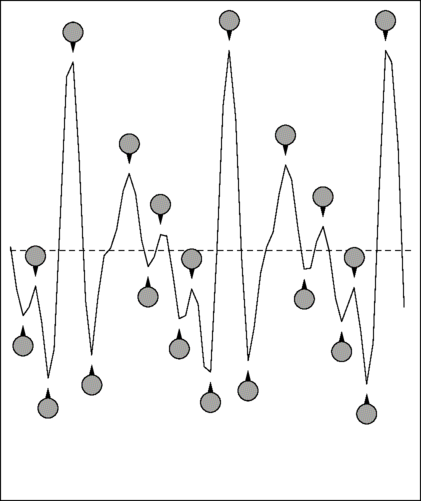
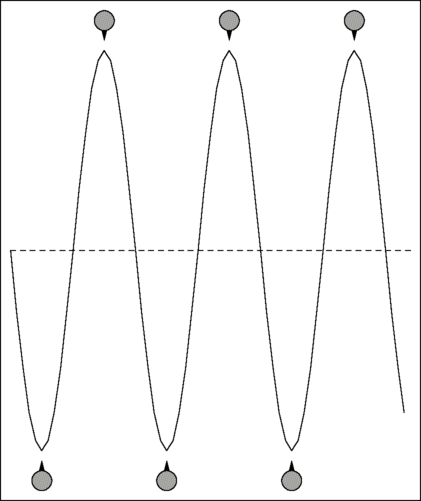
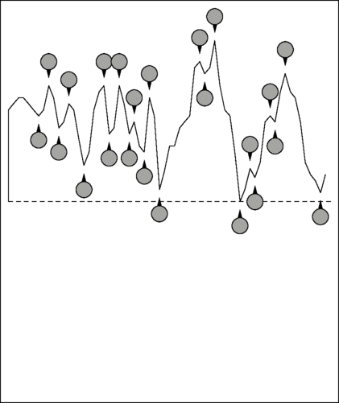
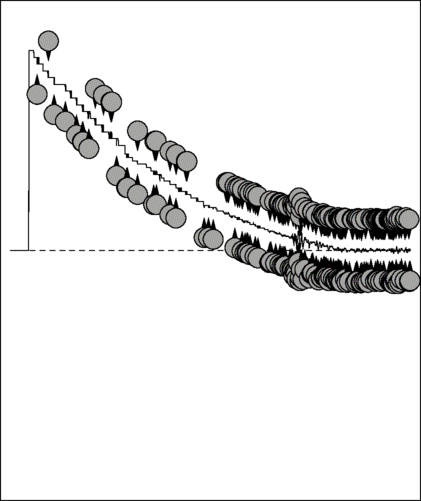

This application note describes the live speaker detection (LSD) signal categorisation algorithm. It gives a broad understanding of how the algorithm works and some guidance as to the purpose of each parameter that controls it. It does not give sufficient information to allow the parameters to be adjusted. The algorithm has been thoroughly tested and optimised against a large database of recordings of english speaking real-world telephone calls. Good accuracy is therefore very likely if used as shipped in an english language environment but note that country specific telephone answering custom and practice may mean the parameters have to be tuned. If an improvement in accuracy is required then please contact Aculab support in the first instance.
The live speaker detection algorithm attempts to classify an input signal as either coming from a human answering a phone call (a live speaker) or as a signal coming from some kind of automatic call answering mechanism (an answering machine for example).
The parameters are modified by using the Prosody speech API
sm_adjust_catsig_module_params(),
with catsig_alg_id set to
kBESPCatSigAlgLiveSpeaker.
The detector itself is started by the
sm_catsig_listen_for()
function, with its catsig_alg_id set to
kBESPCatSigAlgLiveSpeaker.
When live speakers answer the phone and hear silence they are likely to respond in a certain way, for example "Hello...... hello......". The algorithm looks for the difference between this response and that of typical answering machines, for example "Hello this is Fred and Wilma's house. Sorry, we're not in at the moment...". Thus it important that the caller is not played any prompt for the duration of the signal categorisation attempt.
The algorithm works by analysing 3 properties of the signal:
The algorithm categorises the signal according to the following assumptions (any entity denoted [] may be skipped):
Any other sequence is uncategorised.
Thus the signal consists of segments which are of one of four types: silence, tone, glitch, or speech.
The energy of the signal is used to identify silence. The other possible segments are distinguished by further processing. The following sections explain the stages of processing and the parameters available for each stage.
This is done using the same method as is used by the Prosody conferencing
algorithms to detect when people are speaking. See the documentation for
sm_conf_prim_adj_tracking()
for an explanation of this method. The speech_thresh and
min_noise_level values that are used for live speaker
detection are adjustable. Their parameter_id codes are:
| speech_thresh | kSMBESPCatSigParamF_speech_thresh
|
|---|---|
| min_noise_level | kSMBESPCatSigParamF_min_Lmin
|
In addition, two others parameters are used:
kSMBESPCatSigParamF_Lmin_decay. This controls the rate
at which the noise estimate is updated.
kSMBESPCatSigParamF_initial_Lmax. This controls the initial setting
used for expected max speech power prior to measurements made on first speech ecountered.
The signal is immediately classified as active as soon
as its energy is above the threshold. However, speech and tone
segments are allowed to have short periods where the energy is below
the threshold. The detector decides that the segment has ended and a
silent segment has begun only when the energy persists below the
threshold for long enough. This delays the detection of silence a
little. This delay is controlled by the parameter
kSMBESPCatSigParamI_delay_time.
A segment is considered a glitch if it is active (i.e. not
silent) but for only a very short time. A signal that is active for a
longer time is further classified as speech or tone. The parameter
kSMBESPCatSigParamI_glitch_count is the maximum time
that a signal may be active to be considered a glitch.
A segment is also classified as a glitch if it is active for less
than kSMBESPCatSigParamI_min_valid_count and it occurs
less than kSMBESPCatSigParamI_min_valid_period_count
from the point where the first speech segment starts.
Active segments are classified as speech or tone by a simple algorithm that counts the number of alternations. An alternation is where the samples change direction, and speech has frequent alternations. Here are examples showing the alternations in a sample of speech and a tone.
| Example of speech | Example of tone |
|---|---|
 |  |
As you can see, the speech sample has 20 alternations while the tone has only six. This provides a very simple and fast way to distinguish between speech and tones. It is not perfect - since the number of alternations in a pure tone depends on the frequency of the tone so for high frequency tones, this method falsely reports speech. However, all call-progress tones are low frequencies (which is a consequence of them being chosen to avoid the frequencies used by DTMF tones, which are all high), so the method is effective for the purpose of live speaker detection.
Classification into 'speech' or 'tone' is controlled by several
parameters. There are two thresholds:
kSMBESPCatSigParamI_max_valid_tone_count, which is the
maximum number of alternations that a tone may have, and
kSMBESPCatSigParamI_min_valid_speech_count, which is the
minimum number of alternations that speech may have. To avoid
mis-classification of a segment, the detector waits for the signal to
have been active for the period specified by
kSMBESPCatSigParamI_qualify_count before attempting to
classify it as speech or tone. Furthermore, after classifying it, the
signal is monitored to see if it changes from speech to tone or vice
versa. Every kSMBESPCatSigParamI_alter_duration the signal
is checked and if the number of alternations is in the opposite range
then the algorithm considers that the original segment has ended and one
of the opposite type has started. As a further protection against
mis-classification, classification is deferred while the signal has
excessive DC bias. This is because clicks tend to have significant DC
bias, especially longer clicks, which are likely to be long enough to reach
kSMBESPCatSigParamI_qualify_count.
DC bias is measured by counting the number of
positive samples and the number of negative samples and declaring
excessive DC bias if the difference between these values is too big.
This is controlled by
kSMBESPCatSigParamI_threshold_samp_cnt, which is the
maximum difference permitted. Here is an example of a click:
| Part of click | Whole click (32 times longer) |
|---|---|
 |  |
You can see that, although the part of the click shown has 23 alternations, it has such as large DC bias that it is entirely positive. The whole click (about a quarter of a second) shows the bias applies until the click has decayed away to silence.
As explained in the Basic Concepts section above,
a live speaker is recognised when the signal contains a short segment of
speech followed by a long silence, while an answering machine signal
contains more speech (which can appear as several short segments or
one long one). Having decided what segments occur in the incoming
signal, the detector uses the durations of the segments to decide if it
has identified a live speaker or an answering machine. After the
first speech segment it looks for one of two conditions.
If there is silence of at least
kSMBESPCatSigParamI_min_period_off and there are no
more than kSMBESPCatSigParamI_max_off_count gaps in the
speech, then the signal is declared to be from a live speaker.
Alternatively, if this first condition is not met
within kSMBESPCatSigParamI_period_time from the
start of the speech, then it is declared to be from an answering
machine. This allows for an answering machine that has a message
followed by a tone.
The parameters available are:
| Parameter | Meaning |
|---|---|
kSMBESPCatSigParamF_min_Lmin
| minimum signal energy that is permitted for noise |
kSMBESPCatSigParamF_Lmin_decay
| the rate at which the noise estimate is updated |
kSMBESPCatSigParamF_initial_Lmax
| initial estimate of max expected speech energy |
kSMBESPCatSigParamF_speech_thresh
| the relative amount by which a signal must be above the minimum noise to be considered active |
kSMBESPCatSigParamI_min_valid_period_count
| the period, from the start of the first segment of
speech, in which any segment shorter than
kSMBESPCatSigParamI_min_valid_count is
considered to be a glitch
|
kSMBESPCatSigParamI_min_valid_count
| the minimum duration for the first speech segment |
kSMBESPCatSigParamI_glitch_count
| the minimum duration for any speech segment |
kSMBESPCatSigParamI_qualify_count
| the amount of signal that is required to determine whether an active segment is speech or tone |
kSMBESPCatSigParamI_alter_duration
| the duration between checks to see if a speech or tone segment has changed into one of the opposite type |
kSMBESPCatSigParamI_max_valid_tone_cnt
| the maximum rate of alternations allowed in a a tone segment |
kSMBESPCatSigParamI_min_valid_speech_cnt
| the minimum rate of alternations allowed in a a speech segment |
kSMBESPCatSigParamI_threshold_samp_cnt
| the maximum DC bias allowed in the portion of a signal that makes a segmnent be classified as speech or tone |
kSMBESPCatSigParamI_delay_time
| the amount of time for which the signal must be silent for an active segment to be considered to have finished |
kSMBESPCatSigParamI_period_time
| the maximum time allowed for detection, measured from the start of the first valid speech segment |
kSMBESPCatSigParamI_max_off_count
| the maximum number of gaps permitted in speech from a live speaker |
kSMBESPCatSigParamI_min_period_off
| the minimum silence required after the speech from a live speaker |
The default parameter values have been designed for use with English speakers. They are:
kSMBESPCatSigParamF_min_Lmin
| 10108.0 |
kSMBESPCatSigParamF_Lmin_decay
| 1.0008 |
kSMBESPCatSigParamF_initial_Lmax
| 1e8 |
kSMBESPCatSigParamF_speech_thresh
| 0.01 |
kSMBESPCatSigParamI_min_valid_period_count
| 152 |
kSMBESPCatSigParamI_min_valid_count
| 112 |
kSMBESPCatSigParamI_glitch_count
| 48 |
kSMBESPCatSigParamI_qualify_count
| 24 |
kSMBESPCatSigParamI_alter_duration
| 160 |
kSMBESPCatSigParamI_max_valid_tone_cnt
| 48 |
kSMBESPCatSigParamI_min_valid_speech_cnt
| 64 |
kSMBESPCatSigParamI_threshold_samp_cnt
| 360 |
kSMBESPCatSigParamI_delay_time
| 112 |
kSMBESPCatSigParamI_period_time
| 1480 |
kSMBESPCatSigParamI_max_off_count
| 16 |
kSMBESPCatSigParamI_min_period_off
| 600 |
Here is an example set of alternative parameter values for use with Korean. They are:
kSMBESPCatSigParamF_min_Lmin
| 12129.6 |
kSMBESPCatSigParamF_Lmin_decay
| 1.001 |
kSMBESPCatSigParamF_initial_Lmax
| 1e8 |
kSMBESPCatSigParamF_speech_thresh
| 0.01 |
kSMBESPCatSigParamI_min_valid_period_count
| 240 |
kSMBESPCatSigParamI_min_valid_count
| 80 |
kSMBESPCatSigParamI_glitch_count
| 48 |
kSMBESPCatSigParamI_qualify_count
| 24 |
kSMBESPCatSigParamI_alter_duration
| 80 |
kSMBESPCatSigParamI_max_valid_tone_cnt
| 64 |
kSMBESPCatSigParamI_min_valid_speech_cnt
| 48 |
kSMBESPCatSigParamI_threshold_samp_cnt
| 360 |
kSMBESPCatSigParamI_delay_time
| 112 |
kSMBESPCatSigParamI_period_time
| 2640 |
kSMBESPCatSigParamI_max_off_count
| 48 |
kSMBESPCatSigParamI_min_period_off
| 680 |
For other languages it may be necessary to obtain a representative database of signals to determine suitable set of parameters. please contact Aculab support for advice.